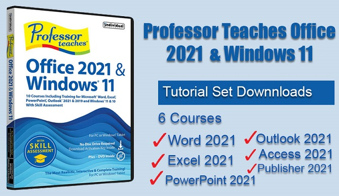

============================
Stats
Title: Professor Teaches Office 2021 & Windows 11 v1.0 Pre-Activated
Category: Apps
Type: PC Software
Language: English
Total size: 1.6 GB
Uploaded By: SunRiseZone
============================
Info:
!!! Remember I don't own or edit anything on links that might be on this torrent!!!
Visit >>> https://ftuapps.com/ Genuine cracked applications direct from the scene group. A Team-FTU project!

PreActivated | 32bit / 64bit | English Professor Teaches Office 2021 & Windows 11 v1.0 Pre-Activated Professor Teaches? Office 2021 & Windows? 11 - Professor Teaches, the #1 best-selling brand of computer training, provides realistic, interactive, and complete training for Office 2021 & Windows 11. Learn Office 2021 and Windows 11 with Hands-On, Interactive Training. Product Description Learn Office 2021 and Windows 11 with Hands-On, Interactive Training. Build your skills, from beginning to advanced topics, with interactive tutorials organized for fast and easy learning. Unlock the power of Office and Windows to improve your productivity at home, school, or work. Learn the new Office 2021 applications including: Word, Excel, PowerPoint, Outlook. Create great-looking documents, spreadsheets, and presentations. Take advantage of powerful new tools for collecting, analyzing, and sharing information. Office 2021 Training 6 Separate Courses! Over 400 Lessons! - Word 2021 - Excel 2021 - PowerPoint 2021 - Outlook 2021 Windows 11 Training Windows 11 has many features that allow you to access and share your information in new ways. Learn to navigate Windows in this comprehensive training tutorial that includes over 60 lessons. - Using the Start Menu - Learn how to use the desktop and personalize Windows 11 - Learn how to work with File Explorer - Minimizing, Maximizing, and Closing Apps - The Cloud and System Settings - Working with Apps and Accessories - Protecting Windows against threats - Organizing Your Workspace with Multiple Desktops - Customizing the Task Bar - Understanding Gestures Realistic, Interactive & Complete Training Professor Teaches provides more than just videos. You?ll interact to perform the correct action during each exercise for better learning and retention. Realistic simulations of Office 2021 and Windows 11 provide an accurate learning environment, so your transition to the actual application is fast and easy. Hundreds of learning topics and beginner through advanced subjects are included. - Checkmarks for Completed Topics - Glossary and Index - Professor Answers for Topic-specific Training - Accurate screen presentations, menus, and buttons provide an easy transition to the real application - Step-by-step interactive exercises help you achieve high retention rates - Practical exercises and examples make learning easy - Professional voice narration assists retention No Other Training is More Complete! - Hundreds of Learning Topics - 4 to 8 Hours of Training per Course - Beginner to Advanced Topics - Self-Paced Learning Objectives - Introductions and Summaries - Interactive Exercises - Professional Voice Narration - Realistic Simulation of Software - End-of-Chapter Quiz Questions Includes Just-in-Time Training Get quick assistance with Professor Answers. Find answers to your questions faster and easier than Microsoft Office Help. Powerful Search and Browse features are just one click away to help you locate the specific topic training you need, right when you need it. Then, it provides mini-training sessions to give you the knowledge you need immediately. Release Notes: - Release notes were unavailable when this listing was updated. Supported OS: - Windows 11, 10 & 8 (32/64bit) - Average 450 MB Hard Drive space available per application - 1280 x 768, 16-Bit Color Display Recommended - Sound card, Mouse, Speakers or headphones Homepage: https://www.individualsoftware.com/ Run predone setup, Install & Enjoy, No activation required / Instruction is Included in the folder! AntiVirus Scanned Result for User-End >>> No Virustotal due to file size limited - It's clean no harm! - Read the False-Positive Infection guidance on web, get knowledge before making noise!